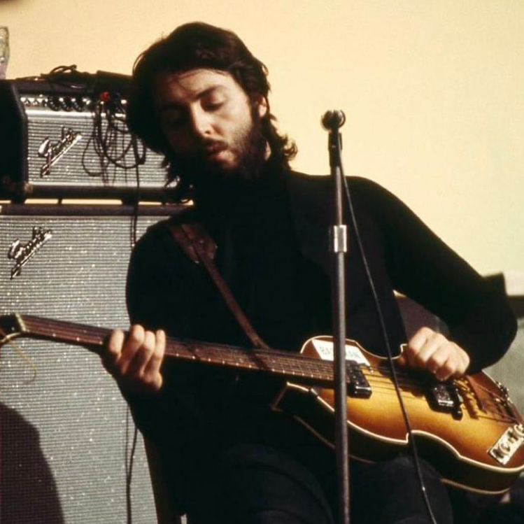

Una reacopilación de las tareas y actividades, realizadas con el profesor Aarón Velasco, enfocadas al lenguaje de programación JavaScript el cual nos permite modificar la interfaz de un sitio web agregando mucho más dinamismo.
Navega por las diferentes actividades
|
Tarea no. 01 
|
Tarea no. 05

|
Tarea no. 06

|
Tarea no. 07

|
¡No te olvides de visitar alguna de estas páginas interesantes!
|
Perfil GitHub |
Fes Aragón |
Proyecto Graficación | Canción Favorita  |
|---|